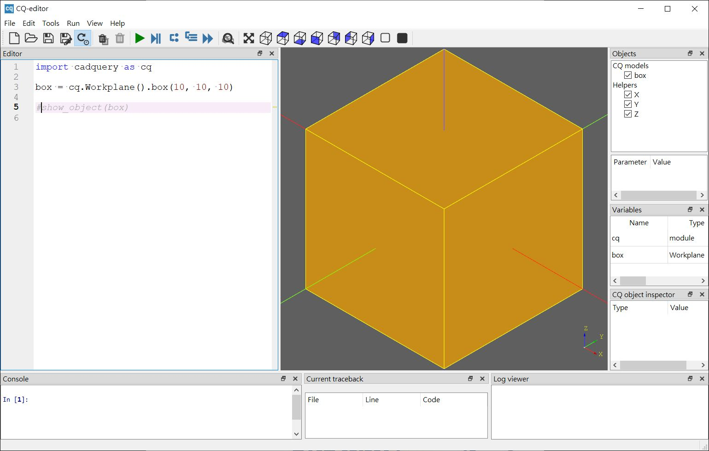

Hello, CadQuery
November 24, 2021自 2015 年以來，我就蠻熱衷於使用程式碼描述 3D 模型，使用的工具是 OpenSCAD，實作出許多的模型，比較有意思的一些，我特意收集在 Cults。
Why CadQuery？
為了便於重用設計過的函式或模組，我建立了 dotSCAD 程式庫，它也列名於 OpenSCAD 官網推薦的程式庫。
這個 dotSCAD 程式庫的好處，就是可以專心地描述想實現的模型，免於一些瑣碎的細節，另一個好處是，收集許多 2D/3D 圖學、許多我自創的演算法、實現，雖然程式碼是最好的記錄，不過有些想法是程式碼無法記錄的，為了避免遺忘，我在 玩轉 p5.js 記錄了一些，透過 p5.js 沒別的理由，純綷那陣子就在玩 p5.js。
OpenSCAD 在 Code + CAD 這領域，巧妙地取得了平衡，至今擁有相當數量的使用者，只不過 OpenSCAD 有別於常見的主流語言，它接近 Functional programming 典範，不少人面對這種典範，特別是只接觸過 Imperative programming 典範的人來說，比較難以掌握，有能力建立並持續維護程式庫的人，相對來說也比較少。
有些人嘗試過 OpenSCAD 透過程式碼描述模型的甜頭後，會試著尋找 Code + CAD 的其他方案，目的無非是兩個，希望能使用 Imperative programming 典範，希望能運用更多現成的程式庫。
Functional programming 典範對我來說不是問題，我也有能力建立、維護程式庫，不過，我確實也斷斷續續物色過一些 Code + CAD 的方案，會這麼做的原因是，研究一些 2D/3D 主題是可以獲得許多東西，我也動手自己造過不少的輪子，不過一個人的時間終究有限啊！
因此在物色另一個 Code + CAD 的選擇時，我的重點就擺在語言是否有豐富生態系這上頭了，這些日子以來，心中侯選的對象有兩個，JavaScript 圈的 JSCAD 以及 Python 圈的 CadQuery，後來我決定多花點時間在 CadQuery，因為相對於 Node.js 的環境，我對 Python 的環境熟一些。
CadQuery editor
想使用 CadQuery 最簡單的一個方式，是使用 CadQuery editor，這是個 GUI 介面，有簡單的編輯器與除錯器，可以在 CQ-editor/releases 下載。
以 Windows 版本為例，解壓縮後執行 CQ-editor.cmd，可以看到以下畫面：

這畫面應該不用太多解釋，左下的 Console 是 IPython，蠻方便的，圖中的程式碼是我打上去的：
import cadquery as cq
box = cq.Workplane().box(10, 10, 10)
# show_object(box)
在 CQ-editor 中，其實可以不用寫第一行的 import，CQ-editor 預設就會將 cadquery 匯入並使用別名 cq，不過基於程式的完整性，我是都會寫出來。
執行過程式後，程式碼中首層變數若參考了 Workplane 實例，會自動顯示模型，就上例而言只有一個變數，可以不使用 show_object；然而，如果程式中有多個變數，可以使用 show_object，因為程式中呼叫過 show_object，CQ-editor 就只會顯示指定的物件。
cq.Workplane 可以建立工作平面物件，這物件是 CadQuery 許多操作的起點，就目前來說，你要知道，Workplane 實例是個容器，如果你有使用過 jQuery，Workplane 的角色就類似其中的 jQuery 物件，因為 CadQuery 的設計靈感，就是來自 jQuery，這就是它會被命名為 CadQuery 的原因。
cq.Workplane() 實際上會建立一個預設工作平面，這工作平面位於 XY 平面，box 方法會畫出中心於原點的方塊，三個參數各是長（x 方向）、寬（y 方向）與高（z 方向）。
程式寫完後存為 .py 檔就可以了，如果你不愛使用 CQ-editor 的編輯器，也可以選用自己愛用的編輯器來撰寫程式，CQ-editor 選單「View/Editor」可以不顯示 CQ-editor 的編輯器，「File/Automatic reload and preview」選取起來的話，每次的存檔，CQ-editor 都會重新載入程式碼並做預覽。
匯出模型檔
如果想匯出 STL 呢？一個方式是選擇右上 Objects 窗格中想匯出的實體，按右鍵會有個 Export as STL，另一個方式是透過 exporters：
import cadquery as cq
from cadquery import exporters
sphere = cq.Workplane().sphere(10)
exporters.export(box, 'c:/workspace/sphere.stl')
在 CadQuery 中，有些方法建立的 3D 實體是虛擬的，例如球，電腦的世界中不存在完美的球，只能是許多平面組成像球的實體，不過，CadQuery 建立球時不會實際算出面數，你看到的是個完美的球，真正的面數是在匯出模型時才會計算。
匯出模型的細緻度可以透過 tolerance、angularTolerance 設定，這兩個設定都跟撓度有關，也就是假設物體在受力會產生的相對變化量，稱者說變形量，tolerance、angularTolerance 分別是有關位置與角度的變形量設定，簡單來說，tolerance 設得越小，面的密鋪程度越高，angularTolerance 設得越小，曲線的變化越細緻。
越小的 tolerance 與 angularTolerance，表示越細緻的模型，然而輸出的檔案會越大，輸出時間也會增長，只是想要個原型或不需要那麼細緻時，可以將 tolerance 與 angularTolerance 設大一些，看看輸出效果是否符合需求。
這個方式比較有彈性，因為可匯出的格式不只有 STL，可參考〈Importing and Exporting Files〉。
CadQuery 文件
CadQuery 的文件蠻豐富的，這是選擇它的另一個理由，可以在〈CadQuery 2 Documentation〉中看到教學、API 文件與許多範例。
直接下載的 CQ-editor，在你還不需要自行安裝第三方 Python 程式庫前都夠用，不過，既然我的目的是想利用 Python 生態系，自然就得先知道該怎麼安裝第三方程式庫，這就在下一篇文件再來談了。